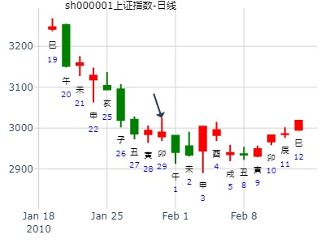
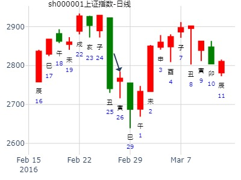
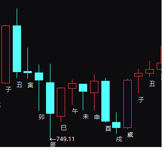
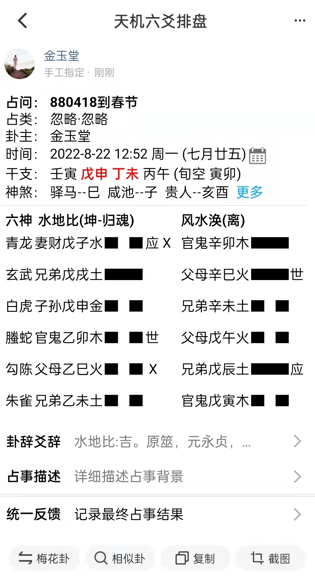

比之涣，财化官，父化兄，水火对战，收阳星。
占事：今天(1月29日)大盘涨跌
本帖最后由易学精微于2010-1-2910:43编辑
男 占事：jtdp
公历起卦时间：2010年1月29日10时32分 (手工指定)
干支：己丑年 丁丑月 己卯日 己巳时 （日空：申酉）
神煞：驿马－巳 桃花－子 日禄－午 贵人－子，申
坤宫：水地比(归魂) 离宫：风水涣
六神 伏神 本 卦 变 卦
勾陈 妻财戊子水▅▅ ▅▅应╳→官鬼辛卯木▅▅▅▅▅
朱雀 兄弟戊戌土▅▅▅▅▅ 父母辛巳火▅▅▅▅▅世
青龙 子孙戊申金▅▅ ▅▅ 兄弟辛未土▅▅ ▅▅
玄武 官鬼乙卯木▅▅ ▅▅世 父母戊午火▅▅ ▅▅
白虎 父母乙巳火▅▅ ▅▅ ╳→兄弟戊辰土▅▅▅▅▅应
腾蛇 兄弟乙未土▅▅ ▅▅ 官鬼戊寅木▅▅ ▅▅
大象水火PK。收星。
财克父，官克兄，多头在六位略强。收阳星。

占事：下周一大盘
起卦方式：手动摇卦 yijingstock: qingyuzeyuan
公历时间：2016年2月26日10时45分
干 支：丙申年 庚寅月 戊寅日 丁巳时
旬 空：辰巳 午未 (申酉) 子丑
坤宫：水地比（归魂） 离宫：风水涣
六神 【本 卦】 【变 卦】
朱雀 ▄▄ ▄▄ 妻财戊子水 应X ▄▄▄▄▄ 官鬼辛卯木
青龙 ▄▄▄▄▄ 兄弟戊戌土 ▄▄▄▄▄ 父母辛巳火 世
玄武 ▄▄ ▄▄ 子孙戊申金 ▄▄ ▄▄ 兄弟辛未土
白虎 ▄▄ ▄▄ 官鬼乙卯木 世 ▄▄ ▄▄ 父母戊午火
螣蛇 ▄▄ ▄▄ 父母乙巳火 X ▄▄▄▄▄ 兄弟戊辰土 应
勾陈 ▄▄ ▄▄ 兄弟乙未土 ▄▄ ▄▄ 官鬼戊寅木

880418传媒娱乐板块指数下半年。比之涣。
占事：880418传煤娱乐板块指数下半年
时间: 2022-08-22
干支: 壬寅年戊申月丁未日 (旬空: 寅卯 )
水地比(归魂) 风水涣
六神 伏神 本 卦 变 卦
青龙 ▅▅ ▅▅ 妻财子水 应Ｘ→ ▅▅▅▅▅ 官鬼卯木
玄武 ▅▅▅▅▅ 兄弟戌土 ▅▅▅▅▅ 父母巳火 世
白虎 ▅▅ ▅▅ 子孙申金 ▅▅ ▅▅ 兄弟未土
腾蛇 ▅▅ ▅▅ 官鬼卯木 世 ▅▅ ▅▅ 父母午火
勾陈 ▅▅ ▅▅ 父母巳火 Ｘ→ ▅▅▅▅▅ 兄弟辰土 应
朱雀 ▅▅ ▅▅ 兄弟未土 ▅▅ ▅▅ 官鬼寅木
六二：比之自内，贞吉。
酉月把官鬼冲实，大跌，大泄应爻。
亥月冲飞父母巳火，大涨。

